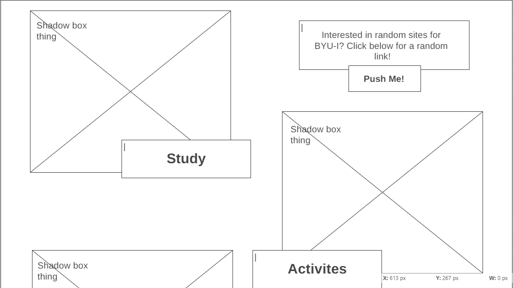
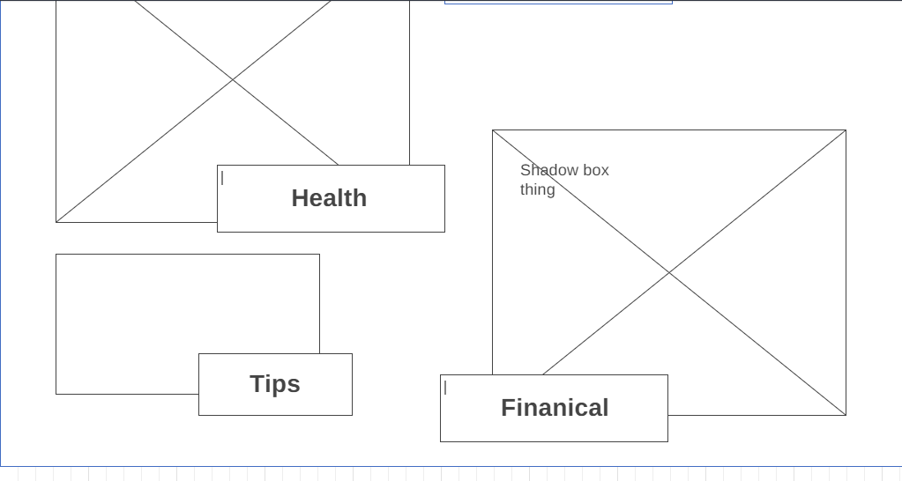
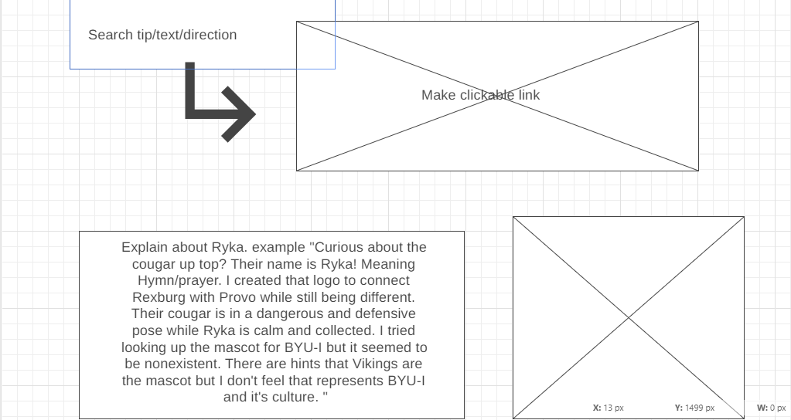
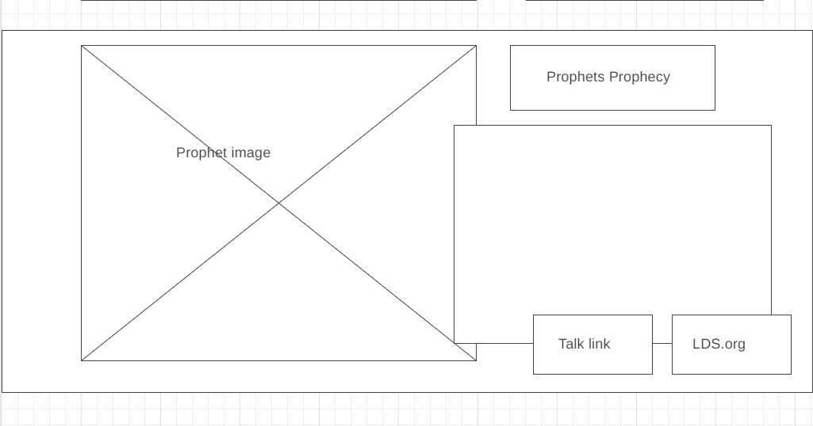
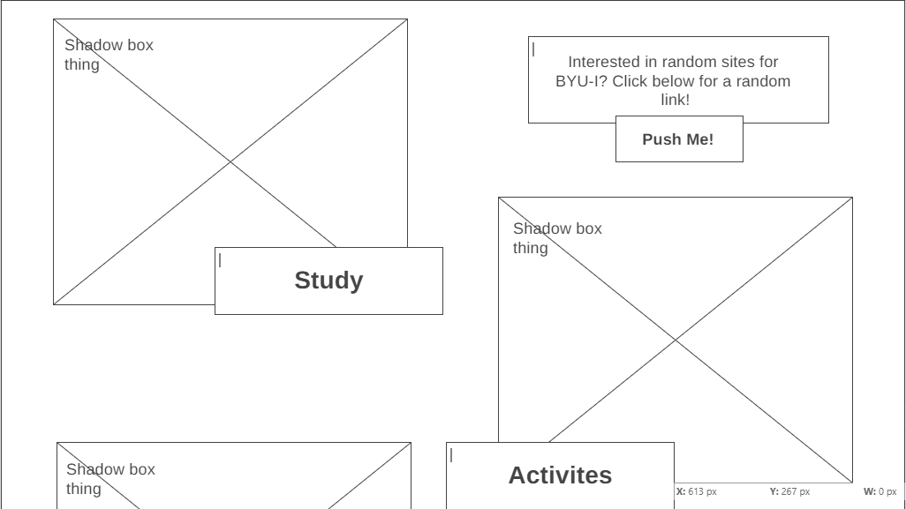
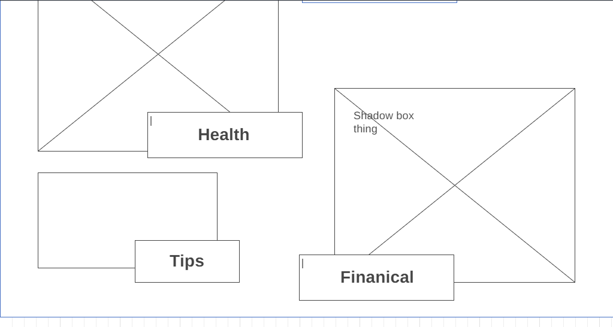
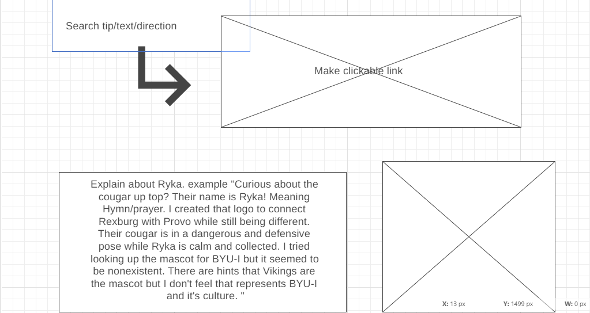
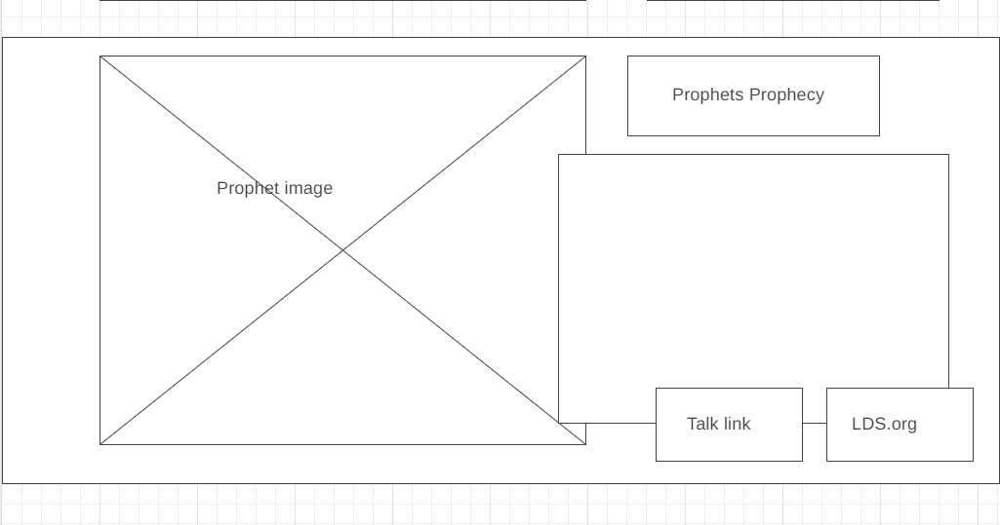

Overview
Purpose
The purpose of this website is to guide students to the avalible resources within campus as well as around Rexburg. I noticed while talking to friends and peers that not many know about the ametities offered on campus. It feels like a waste because these resources are free and open to almost every student. There are also several fun activies that occur that most students miss on because they're not aware and aren't willing to look. I wanted to create a site where it categorizes subjects for students to find things. The sections will be titled: Study, Activites, Health, and Finacial (Open to modifications). These sections will then lead to a list of links that describe their purpose and how you can use it for your desired problem. It is intended to create a quick and easy naviagtion for the resources avaible because the BYU-I website is complicated on it's own and students don't even bother.
Audience
My main audience is the students that attend BYU-I and live in Rexburg. Those who live outside of Rexburg or don't attend BYU-I are free to explore, however, some options may not be applicable to them. Because I am targeting 18-24 year olds it will be a simple site with easy to read and understand font while having an interesting layout. I want to keep the students engaged but not bored and because of the rush of college culture I will only touch on the description of links. The categorizes will be centered around students here in Rexburg. I will keep the color scheme calm and not too bold.
Branding
Website Logo
Style Guide
Color Palette
Palette URL: https://coolors.co/user/palettes/63594ec35f13cd000a41cdb9
https://coolors.co/ffda90-1b9aaa-1d3461-1f487e| Primary | Secondary | Accent 1 | Accent 2 |
|---|---|---|---|
| [#1f487e] | [#1b9aaa] | [#101d42] | [#ffda90] |
Typography
Heading Font: Archivo Black
Paragraph Font: Sans Serif
Normal paragraph example
Here at BYU-I it's difficult to find times to relax or hang with your friends. Especially if you don't have a car or family to show you around. It feels as if nothing happens around Rexburg, it's literally a desert! However, if you look carefully you'll find several activites to explore.
Colored paragraph example
Having a hard time finding a comfortable and quiet place to study? Need a room for a group project and no ones apartment is clean? BYU-I has prepared for that! This link will take you to a reservation site where you can book rooms right on campus for you to use for free! It's comforatble and easy to book and provides you will ample charing ports because we all know that's an issue with studying on campus.
Navigation
Site Map
Content
Home page
The idea of this site is to provide easy navigation that directs students of BYU-I the resources avaible to them. There are several assets that aid in student success that campus as well as the church invest in. I hope that visitors will approach the site with questions about campus resouces, regardless if they are specificlly looking for fianical or academic queries. The home page will produce a simple instruction that informs the user of the websites purpose and encourage them to explore. Below the header will be the themes with a corresponding picture a link connected with both the button and image. There will also be a random button than links the user to a random site that is within the pages. At the bottom there is a description of how to search BYU-I's own website for additional information. As well as info on the self made cougar logo. Lastly there will be a picture and quote from the prophets prophecy about this college as well as links to lds.org and the talk. I may impliment a spiritual page as well. There will also be a tips page that just gives little points on how to get through college life.
Images for the Home page
Academics
BYU-I is a university, meaning that it deals with several departments of study. There are at least 6 colleges, each with their own layers of departments and offices. It can get confusing when you just want to work on your classes and obtain a comforatble income. However it doesn't have to be too complicated. There are several means to creating a simple and relaxed enviroment for your education journey. BYU-I tries its best to make it easy to understand and get by. They also have resources to aid with outside life that may affect academics.
- Career Center
- Academic Advising
- Room Reservation
- Student Support
- Career Fair
- Viking Book Rentals
Images for the Page 2
Events
Rexburg is a desert. Literally, it's surrounded by plains and mountain. The worst thing in college is being bored when you don't have to be. Sure you may have great activies at home such as your switch or netflix but theres wonderful activies outside of your apartment. There are great clubs and events that campus constantly supports as well as Rexburgs own community and enviroment that provide ideas. Whether it be connecting with your friends, going on a date, or entertaing yourself there are great place around town. You only have to make the effort to look.
- Societies and Clubs
- I-Belong
- constant Holiday events
- Student Activites center
- BYU-I Instagram Activites
Images for the Page 3
Financial
It's nothing to be ashamed of. Having trouble with funds and income is something that everyone deals with. The worst thing to do is to stay in your current situation if there is a better option. BYU-I does it's best to keep tution as low as possible so you don't have to suffer through your studies. But there is more to this college than just low tuition, especially for those of specific situations. Life happens and it sucks, definatly in this capitalistic economy. Take advantage of the resources provided. There is no shame. Heck the employees beg for students to use them! It's their job and if you don't use it at all then their efforts go to waste.
- Finacial Aid Office
- BYU-I Grants and scholarships
- Dean of Students
- Honor Office
- Budgeting classes
- Family Crisis Center
Images for the Page 3
Health
The one thing that every college student disregards is personal health. It's a hard problem to deal with, especially when you're the only one checking in on yourself. However, campus cares about you and knows how important taking care of you body is. BYU-I provides several resources that make self-care eaiser to impliment in your daily life. The only thing you have left to do is commit.
- Health Center
- Counseling Center
- Wellness Center
- Fitness Classes
- Family Crisis Center
Images for the Page 3
Tips
College is different for everyone. Some people love to slack off on work and party around while others dig themselves in their assignments to the point of depression. No one is perfect and college is tough. However, these are some tips that aided my journey.
- Check out the BYU-I instagram stories and posts, they usually provide vital information for uncomming events or due dates.
- The second floor of the McKay Library is a great place to study and consentrate on homework. It's an offical quiet area with several seats and outlets to choose from.
- TALK TO YOUR PROFESSORS. They're human and most likely will understand what ever problem or situation has come up. If they don't, get a better teacher.
- When choosing classes, use ratemyprofessor.com. I swear it will save your college experience. I've been able to have wonderful teachers that work with my learning style due to that site. It has it's quirks but so far it hasn't failed me.
- Pick a schedule that works for you. If you focus in the morning, take early classes. If you function in the evening or night, take evening classes and sleep in. BYU-I gives you the option to format your schedule according to your style. Don't push yourself just because you feel you need to adhere to your past high school habits. Sometimes getting an hour of sleep will set you up for a more productive day.
Images for the Page 3
Wireframes
Home
https://wireframe.cc/ExETeoe 






